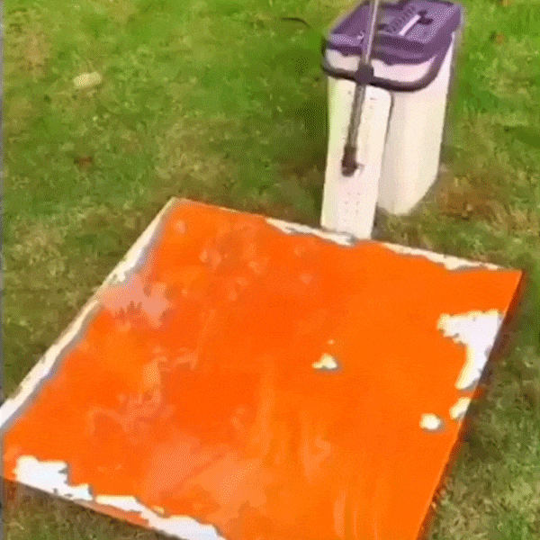
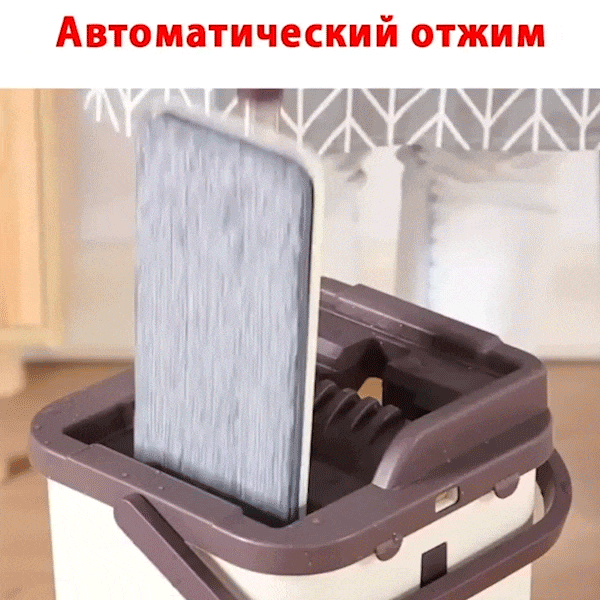
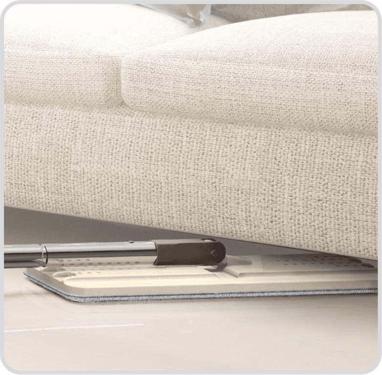
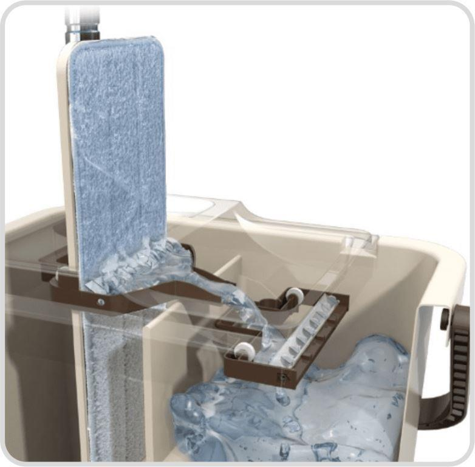
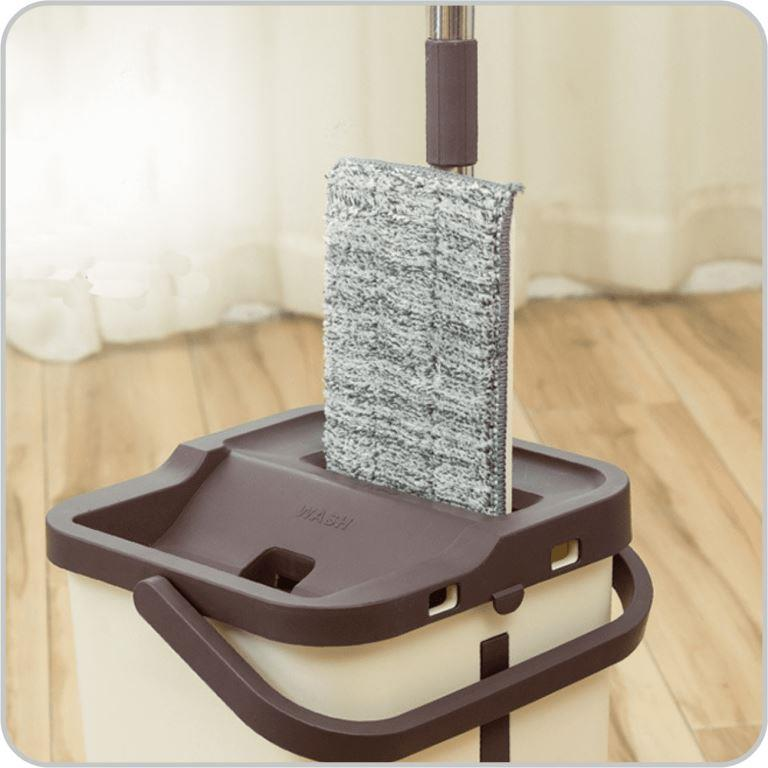

Комплект для уборки
«Швабра с отжимом и ведром»
простое решение всех
бытовых проблем



-

Идеально чистый пол
Никаких разводов и лишней воды. Идеально чистый пол за считанные минуты -

Уборка с комфортом
Избавит от тяжелой необходимости двигать мебель, чтобы добраться до труднодоступных участков -

Инновационная очистка
Оснащен системой полоскания и отжима, позволяющей полностью удалять грязь с насадок -

Гигиеничность
Антибактериальная сушка в вертикальном положении избавит вас от вредных бактерий
Швабра с отжимом и ведром обеспечит Вам идеально чистый пол за считанные минуты!